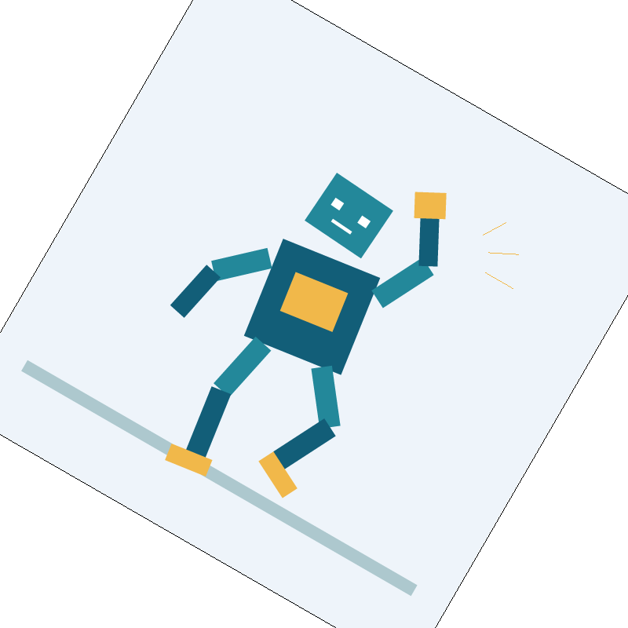

The rule for this write-up was "Don't overdo it." This homework starts with drawing triangles and builds up to moving shapes, blending colors, and adding textures. The pictures made the sampling part easier to understand: more samples helped the edges, but small texture details needed mipmaps too.
Task 1
First, I put a box around the triangle and cut off any part outside the screen. That gives me a smaller area to check. Each pixel is sampled in its middle, half a pixel over and down. I test which side of each edge the point is on. If all three results are positive or zero, or all are negative or zero, it gets filled. This works for either order of the vertices. Zero counts as inside, so points on an edge are included. A triangle with no area is skipped.
Nothing outside the box gets checked, and each sample only needs three edge tests. So this does no more work than checking the bounding box. The picture marked 1 sample below is the result for Task 1 too.
Task 2
One point can miss a thin part of a triangle. Supersampling gives each pixel more chances to catch it. Four samples make a 2 by 2 grid, and sixteen make a 4 by 4 grid. Each sample is in the middle of its little square. The buffer keeps all these colors together for each pixel, so 16 samples means 16 stored colors. It gets resized when the window or sample rate changes, and cleared to white for each new frame.
The triangle fills only the samples it covers. Points and lines fill every sample in their pixel so they still show up. At the end, the colors for each pixel are averaged into the one color sent to the screen.
1 sample
Pixel inspector
4 samples
Pixel inspector
16 samples
Pixel inspector
These are basic/test4.svg at the default view, with the inspector in the same place. The red tip is pretty rough at 1 sample. At 4 and 16, it has lighter pixels around the edge and looks smoother. Those pixels have some red samples and some white ones. Averaging them is what makes the softer edge.
Task 3
The three transforms move, resize, or turn a shape. I used 3 by 3 matrices because the points are in homogeneous coordinates. Rotation takes degrees from the SVG, so the code changes the angle to radians before calling sine and cosine.
The robot in my_robot.svg is supposed to be waving while taking a step. One arm is up and one knee is bent, with the body leaning a little. The limbs are inside nested groups. So when the shoulder turns, the forearm and hand move with it. Changing the elbow still lets the lower arm turn on its own.
my_robot.svg, 16 samples per pixel.
Task 4
Barycentric coordinates tell how much each corner contributes at a point in the triangle. There are three weights and they add up to 1. I find each one by dividing the area of the small triangle opposite that corner by the whole triangle's area. Then I multiply each corner's color by its weight and add the colors. Right on a corner, you get that corner's color. If the weights are equal, you get an equal mix.
In the left picture, the color gets more red as you go toward the top. Along the bottom, there is only green and blue to mix. The color wheel on the right does the same thing with a bunch of triangles.
Task 5
The UV coordinates say which part of the texture belongs at each corner. I blend those UVs with the barycentric weights to find where a point inside the triangle lands in the image. Then I turn that position into texel coordinates. At the borders, I clamp the indices so the code does not read past the image.
Nearest sampling rounds to the closest texel and takes its color. Bilinear uses the four texels around the point. It mixes the two on each row, then mixes those two results. A closer texel gets more weight.
These use texmap/test1.svg with L_ZERO. The zoom and inspector position are the same in all four pictures. Nearest at 1 sample looks blocky around the coast. At 16 samples those blocks soften a bit. Bilinear already looks smoother at 1 sample, so increasing it to 16 does not change as much.
The difference is easier to see when zoomed in. One texel can cover a whole block of screen pixels. Nearest repeats its color across that block, while bilinear blends toward the next texel. Sharp color changes show this the most. Bilinear is still not enough when a lot of tiny texture details get squeezed into one pixel.
Task 6
Mipmaps are smaller copies of the texture, made by averaging pixels. To pick a level, I compare the UV at a sample with the UV one screen pixel to its right and below. The u differences get multiplied by the original texture width, and the v differences by its height. The longer change gives an estimate of texels per pixel. Two texels means level 1, four means level 2, and each doubling goes up another level. The level is clamped to what is available.
L_ZERO always uses the original image. L_NEAREST rounds to the nearest mip level. L_LINEAR samples the levels on either side and blends them. The pixel filter is a separate choice, so any of these works with nearest or bilinear. Bilinear together with L_LINEAR is trilinear filtering.
More screen samples smooth the edges, but cost more time and sample-buffer memory. Bilinear reads four texels instead of one. It helps when zoomed in and does not need another texture image. Mipmaps help when zoomed out, but storing the smaller images costs about one third more memory for a square power-of-two texture. Blending two mip levels also takes longer than picking one, but the change between levels is smoother.
These show Zone plate boys at 1 sample with the same view. Level 0 makes patterns that are not really in the image. Bilinear helps a little. The nearest mip level removes more of that fine detail, and adding bilinear gives the smoothest result here. About 1.8 texels fit in each screen pixel, so the nearest level is 1.
One bug here was that the last mip levels came out black. The loop was stopping too soon and never filled them. Letting it reach the last level fixed that.
The result is not an exact match to every reference image. A few pixels differ on thin edges and the color wheel. The lion and sphere also use partly transparent strokes, which the starter does not support.
Image: AlbertCahalan, Zone plate boys, CC BY-SA 3.0. The original PNG and filtered screenshots use this license.
Task 1
For the extra part, I cut down the empty space being checked. Each row gets a smaller range based on where the triangle can reach. There is one extra pixel on either side to avoid losing an edge from rounding. Very large coordinates use the original box. The edge test itself is the same. B switches between the two versions.
Scene
Samples
Box (ms)
Rows (ms)
test4.svg
1
0.539
0.268
test4.svg
16
6.000
2.975
skinny.svg
1
9.517
0.155
skinny.svg
16
99.217
1.060
The table gives CPU time in milliseconds for svg.draw(), using clock(). This was on this Mac at 800 by 800 with -O3. After a warm-up, I took the median of seven batches, each with twelve draws. The timer leaves out loading, making mipmaps, clearing, and resolving. Test4 takes about half the time. Skinny triangles improve much more because so much of their bounding box is empty.
Task 2
J switches to jittered sampling. Each little grid square gets a random point. The pixel and sample numbers set its seed, so the points stay still across redraws. All triangles use the same points, which avoids gaps. At 1 sample, it still uses the center.
These thin bars have three different spacings. The grid makes extra vertical bands. Jittering breaks them up, but looks grainy instead. So it is not perfectly smooth either. It just avoids the repeating pattern.
Task 3

View rotated 30 degrees.
The [ and ] keys turn the view by 15 degrees. This happens after SVG to NDC: move the center to the origin, rotate, then move it back. After that comes NDC to screen space. The border goes through the same transform. Space puts the view back. Mouse movement is turned back into SVG space so dragging still goes the way the mouse moves.
Task 6
For the extra filter, press L once after trilinear. A screen pixel can cover a long, narrow patch of texture, so using one large mip level can blur too much. The code finds the long and short directions from the UV changes. The short direction picks the mip level, then samples along the long direction are averaged. There are at most 16 taps. If more are needed, the short filter is widened. Both pixel filters still work with it.
These all use one screen sample and the same view. The weave is squeezed much more in one direction. Nearest and bilinear leave little checker patterns. Trilinear gets rid of them, but the colored stripes disappear too. Anisotropic keeps the stripes and removes most of that checker noise.
Method
CPU time (ms)
Nearest
1.074
Bilinear
2.389
Trilinear
4.955
Anisotropic
28.938
The timing setup is the same as Task 1. This filter is slower because it reads the texture several times per pixel. It uses the mipmaps already stored, so it does not need more texture images. The line of samples is still only an approximation. The idea for picking the mip level came from PBRT, linked below.
Task 7
The robot is taking a camping trip on another planet. The sky and planet use color triangles, and the stars, mountains, tent, and fire are polygons. The ring is a bunch of short pieces. Half are drawn behind the planet and half in front.
competition.svg, 800 by 800, saved with S at 16 samples.
The file src/generate_competition.py makes this SVG. Sine and cosine place the points around the planet and its ring. The stars use a fixed random seed so the scene comes out the same each time. The waving arm is made with nested groups. There are no paths, just shapes the renderer can draw.
Codex helped with the code, tests, scene generator, and writing.